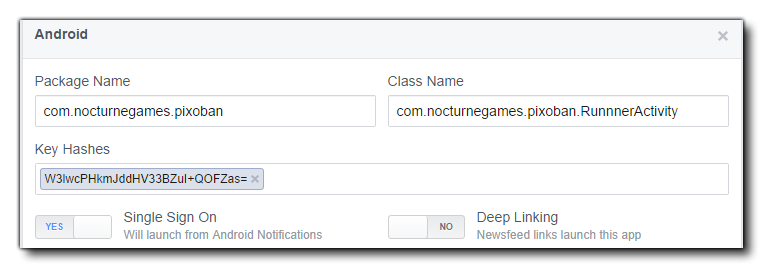

L'API graphique actuelle prise en charge est Graph API v2.0 sur toutes les plates-formes.
REMARQUE: Si l'application Facebook est installée sur votre appareil de test, ces fonctions ne fonctionneront que lors de la création d'un exécutable, car le simple test du jeu (en utilisant les boutons verts ou orange "play") ne fonctionnera pas correctement. Fondamentalement, le coureur de test et l'appli FaceBook communiquent entre eux pour que le mécanisme de communication soit correctement configuré et que vous n'obteniez que la configuration correcte via le bouton Créer une application.
Lorsque vous configurez votre page Facebook pour qu'elle accepte une application Android, vous devez indiquer le nom du package Android (au format URL inverse et être conforme à votre ID de lot de jeux). Vous pouvez également définir le nom de classe <package_name>.RunnerActivity. GameMaker Studio 2 prend également en charge l' GameMaker Studio 2 unique pour Android applications Android, ce qui vous permet d'autoriser le lancement du jeu à partir des notifications de l'application Facebook Android. Il n'est pas nécessaire d'activer Deep Linking car il n'est pas pris en charge par GameMaker.
Il y a aussi une section où vous devez entrer l' Android Keystore Hash qui est unique au keystore que vous utilisez pour votre jeu. Comme cela peut être assez difficile à obtenir, GameMaker Studio 2 peut le générer pour vous à partir des Préférences Android, et vous pouvez simplement le copier et le coller dans la partie requise de la page d'installation de Facebook.
L'image ci - dessous montre comment votre finale Facebook Android section devrait ressembler: 
La configuration de base pour les applications iOS avec les fonctions Facebook est la même que pour Android, cependant, il y a quelques éléments clés qui doivent être correctement configurés sur la page Facebook Developers de votre application:
- ID de lot: Doit correspondre à l'ID de lot de votre jeu (généralement sous la forme "com. {Yourcompany}. {Yourgame}").
- iPhone App Store ID: Il s'agit de l'identifiant Apple associé à votre jeu, tel qu'il apparaît sur iTunes Connect pour le jeu iPhone.
- iPad App Store ID: Comme ci-dessus, sauf pour iPad.
- Connexion Facebook: GameMaker Studio 2 prend en charge l' GameMaker Studio 2 unique pour les applications iOS. Vous pouvez donc activer cette GameMaker Studio 2 pour autoriser le lancement du jeu à partir de l'application iOS pour iOS.
- Deep Linking: Ceci n'est pas supporté, donc gardez désactivé.
- URL Schéma Suffixe: Ceci n'est pas supporté, laissez donc vide.
Notez également que la version iOS Facebook SDK est 3.16.1, ce qui signifie que la cible iOS minimale est la version v5.0 et supérieure.
La cible HTML5 fonctionne presque exactement de la même manière que tous les modules cibles précédents, mais vous ne pouvez pas tester les fonctions localement, ce qui signifie que vous devrez compiler et télécharger sur votre serveur pour tester. Une autre fonction supplémentaire a été ajoutée pour créer une compatibilité avec les cloisons d'accès pour les jeux HTML5 qui n'est pas disponible pour les autres plates-formes:
Les fonctions listées ci-dessous sont pour intégrer votre jeu avec Facebook:
facebook_init() avant que l'une de ces fonctions puisse être utilisée correctement. Il y a quelques choses à noter lorsque vous travaillez avec Facebook, et ceux-ci sont énumérés ci-dessous:
- La fonction de connexion n'est appelée qu'une seule fois lors d'une action de publication via GameMaker Studio 2 conséquent, si vous vous connectez une seule fois et essayez de retester le bouton, aucun résultat n'est visible.
- Si vous avez installé l'application Facebook sur votre appareil Android, la fonction de connexion n'est pas appelée du tout appelée depuis une application compilée. Votre application se connecte automatiquement au même compte Facebook que celui que vous avez associé à votre application Facebook.
- Si vous avez l'intention de permettre à votre jeu de publier de toute façon en utilisant les fonctions Facebook, vous devez demander la permission à Facebook lui-même. Pour faciliter cela, vous devez créer au moins un compte d'utilisateur de test que vous avez déjà testé comme fonctionnant pour que Facebook puisse l'utiliser, afin de simplifier la permission.
- Lorsque vous demandez l'autorisation de Facebook pour votre application, il est conseillé d'informer Facebook que votre application le fera (dans les notes de demande de permission) afin qu'elle sache ce qu'elle doit rechercher. En outre, incluez des captures d'écran de votre console de commande montrant une connexion réussie, l'écran de connexion sur votre appareil et le mur positif sur votre compte de test Facebook.
- Si vous utilisez un utilisateur de test, y compris des captures d'écran provenant du mur de l'utilisateur de test et que vous utilisez Facebook test, utilisez le même utilisateur de test.
- Tout le texte que vous souhaitez publier devra figurer dans la bannière inférieure de votre message. Tout texte pré-rempli (même s'il est modifiable par l'utilisateur) n'est pas autorisé. Cela signifie que vos messages muraux devront être des messages de dialogue qui permettent à l'utilisateur d'écrire ce qu'il veut.
- Vous aurez besoin de votre nom de package et de votre nom de classe pour obtenir vos autorisations approuvées via Facebook. Votre nom de package est répertorié dans les paramètres de votre jeu et le nom de la classe est votre nom de package + ".RunnerActivity", par exemple: " com.macsweeneygames.catchthehaggis.RunnerActivity ")
- Si votre jeu a été configuré en mode "bac à sable" depuis le tableau de bord Facebook, tous les utilisateurs qui souhaitent jouer à votre jeu doivent avoir été ajoutés à la liste des utilisateurs de test sur Facebook.